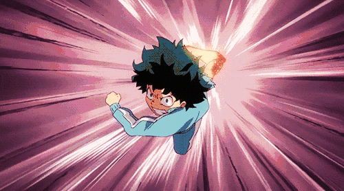

Izuku Midoriya (緑みどり谷や出いず久く Midoriya Izuku?), também conhecido como Deku (デク?), é o principal protagonista da série de mangá e anime My Hero Academia.
Características:
Determinado;
Estatura baixa;
Forte;
Homem;
166 cm.
Que tal uma visão do que pode ocorrer, combinando tudo isso?
Veja a seguir:

Sim, eu sei, parece absurdo, uma criança com essa força.Mas neste mundo de heróis a qual ele vive, isso é bastante comum, se está a fim de verificar um pouco mais, busque(aqui daria copyright hehe).